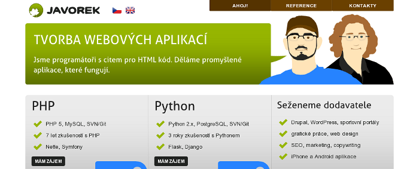

Pod značkou javorek.net jsme vytvořili hromady webů, nakódovali spousty šablon a vytvořili přehršel kvalitního objektového kódu v PHP. Jenže pak už nás to nebavilo a postupně jsme si šli každý vlastní cestou.
 Honza Javorek
Honza Javorek
 Michal Wiglasz [viglaš]
Michal Wiglasz [viglaš]